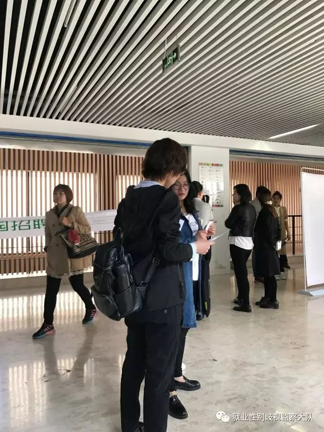

猛击文末“阅读原文”
了解＃一周一校招＃计划
加入请在微信后台发送
“消除校园招聘就业歧视＋姓名＋微信号”
就业监察大队的＃一周一校招＃计划已经开始，昨天（4月21日）天津一位女大学生小安前往校招现场。以下是小安的＃一周一校招＃经历。
4月20日，我独自前往了天津工业大学校招现场，这也是我第一次参加校招。虽然做好了企业对女性有歧视的心里准备，但还是遇到了意料之外的情况。
▲招聘单位一览表
招聘会9点开始，我提早去了一会，招牌现场还没准备好，就先找了几位在等待的大四学姐聊天。几乎几位学姐自己或者身边求职的女性朋友都曾遭遇过不同程度的性别歧视。
被问到如何解决的时候，无一例外，都是心里虽然无奈但也只能不了了之。有些学姐也被这些主流观点影响，接受了男生在有些工作上确实比女生有优势的观点。
事实真的是这样吗？
▲正在准备的招聘现场
一入场看到了这则招聘，我真心的希望，有一天所有的招聘都能够是这样，以能力而不是性别来评价一个人。
▲中赢集团招聘，不限年龄，不限性别
招聘会开始前我在会场里随意走了走，看到了下图这个招聘，问了旁边的工作人员。这是先前招聘会的企业留下的，虽然不是今天的，但它告诉我们，歧视在这里曾经存在过。
▲“招聘本市男生”
我在现场发现几家公司的招聘中写着女性优先，便以替学长来看招聘信息为由，去询问负责招聘的工作人员。
工作人员很热情的告诉我，除了前台要求必须形象气质好的女性以外，其他工作如果男生愿意做也是可以的，要我拿他们的名片给我的学长。
这种对于女性的刻板性别印象，何尝不是一种歧视？女生不是花瓶。
之所以举出这两家企业，是为了和下面一家只招男性的公司态度做对比。
▲只招18-35岁的"限女性"的招聘
▲女性优先的招聘
我以来替学姐看招牌信息为由，询问了工作人员为什么男性为主，女生是否可以。工作人员告诉我这是公司领导的决定他也没办法改变，大概因为这个工作辛苦，女生受不了。只字未提女生如果有意愿也可以应聘。
随后我联系工大负责老师前来时，工作人员告诉我女生想做也是可以的，并让我留下简历。在我指出既然女生也可以做为什么之前拒绝我时，男性工作人员明显带着挑衅的语气说，那就划掉男性优先。分明想告诉我，即使划掉了男性优先，也还是可以只招男生。
男性优先和只招男性有什么区别？很多时候只是为了在遇到有人抗议的时候有一个说辞，我们只是说优先，不是说女生不可以。
最后，工大的负责老师出面警告了企业，不许发布带有歧视的招聘，否则下次不予许他们企业进入工大校招。虽然学校老师的态度很赞，但我想，如果人们的观念一天不改变，大概对女性的歧视也只是从明面转到暗面。
▲在线回声（天津）科技发展有限公司带有歧视信息的招聘
性别歧视和刻板性别印象随处可见，方正宽带的招聘基本都限定了性别，我询问工作人员原因，工作人员的回答无非还是那些我们常见的理由，女生不适合做劳动强度大的工作，女性对机械的使用不如男性。
▲方正宽带发布的带有刻板性别分工的招聘
在走完所有招聘后，我找到了工大的负责老师，和老师反映了情况。老师随即和我到招聘现场警告了相关企业，要求他们撤下带有性别歧视的招聘，并表示以后会把关进入学校的企业。我还遇到了举办招聘会的一位负责人学长，学长表示支持，以后可以提供校招信息给我。
转完招聘之后时间还早，于是我决定在招聘现场发就业监察大队“马户陪你打官司"的传单，并告知求职的学姐们，如果遭遇性别歧视，我们愿意和她们一起应对。
插播一则小广告：
微博：@马户陪你打官司
微信：dengjiawen569521
马户是中国第一起因性别歧视将国企告上法庭案例的当事人。为了支持遭遇性别歧视的你，马户同学新开通了一项业务，免费专职陪你打官司。马户会倾尽一切办法帮助你，提供可参考的经验和资源。
收到传单的学姐们的反应，让我觉得这一早上的辛苦都没有白费。记忆最深的是一位学姐说：“原来还有人会保护我们啊，谢谢你们。”
发了五十份传单，收到传单的学姐们都很惊喜，认真的听我讲完，和我说了谢谢。以致于旁边招聘的一位工作人员过来问我：“你们是什么单位的？招聘什么的？”

▲分发就业监察大队“马户陪你打官司”的传单
希望每一位女性的权益都可以被保护，希望对女性的恶意可以少一些，我们在行动，你愿意也成为其中的一份子吗？别让歧视成为习惯!!!
校园招聘中的性别歧视有哪些？
想要一起逛校招的，加入我们吖！
联系方式：发送“消除校园招聘就业歧视＋姓名＋微信号”至公众号后台
点击“阅读原文”，了解＃一周一校招＃计划！